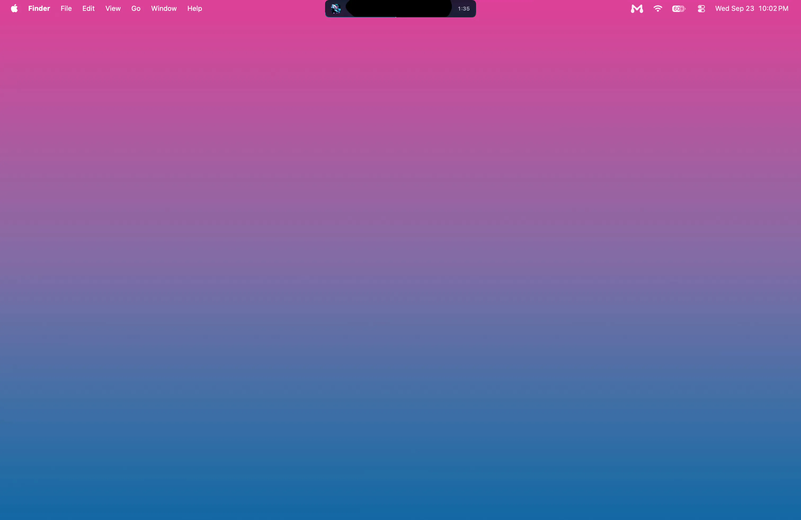

Music, magnetized.
A MacBook, printed in black, pink and blue ink. Black liquid hangs from its notch and rises into peaks in time with music.
A free music player that lives in your MacBook’s notch, with black ferrofluid that moves to whatever your Mac is playing.
Download for macOSRecorded on a MacBook. Not a mock-up.

A screen recording of the real app, in real time, on a MacBook desktop: black liquid moves with the music in the player under the notch while two-finger swipes skip forward and back and pause and play, the next button is clicked and the seek strip scrubbed; then the pointer leaves, the player goes back into the notch, and the pointer comes back up to open it.
- Hover the notch to open the player.
- Scrub along its bottom edge to seek.
- Swipe two fingers to skip or pause.
Idle, it never leaves the menu bar.
Needs macOS 26 on Apple silicon. Free and open source, 575 KB.
Or install it from Terminal:
curl -fsSL https://magnetite.app/install.sh | sh
The zip isn’t notarised yet, so macOS blocks its first launch once: approve it under System Settings › Privacy & Security › Open Anyway. The Terminal install skips that step.